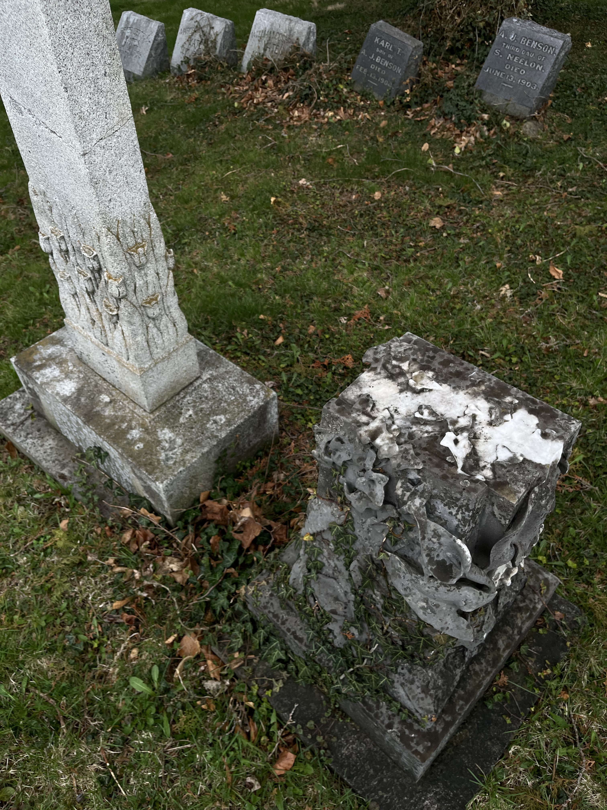

oneimage5x
oneimage5x
oneimage5x
oneimage5x
oneimage5x
<!----this is image 1---->
is it glitch if its just glitchy???? be honest we've seen this before
"the popularization and cultivation of the avant-garde of mishaps has become predestined and unavoidable"

<!----this is image 2---->
new order
go back and find it!!
this one I want to expand outwards using tweened filters
go back and find it!!